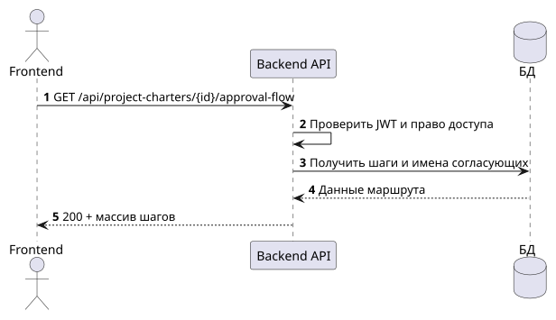

Возвращает текущий маршрут согласования устава и статусы его шагов.
Доступ: право project_charter:access.
Используется в UC-7. Просмотр истории.
Схема работы


Алгоритм
Проверить право доступа и получить шаги согласования устава.
Отсортировать шаги по
stepOrder, затем поidв порядке возрастания.Добавить имя согласующего и признак активности текущего шага.
Вернуть массив шагов согласования.
Входные параметры
Параметр пути (PATH). Тело запроса и QUERY-параметры отсутствуют.
Поле | Тип | Обязательно | Описание |
|---|---|---|---|
| integer | Да | Идентификатор устава |
Ответ
200 OK: возвращает массив шагов согласования.
Поля каждого элемента массива:
Поле | Тип | Описание |
|---|---|---|
| integer | Идентификатор шага |
| integer | Порядковый номер шага |
| integer, nullable | Идентификатор назначенного согласующего |
| string, nullable | Имя согласующего |
| string, nullable | Название шага |
| string | Статус шага: |
| boolean | Признак активного шага ( |
| string, nullable | Комментарий или причина решения |
| integer, nullable | Идентификатор пользователя, принявшего решение |
| date-time, nullable | Дата и время начала согласования |
| date-time, nullable | Дата и время завершения согласования |
| date-time | Дата и время создания шага |
Если устав не найден или маршрут согласования пуст, система возвращает 200 OK с пустым массивом [].
Поле isCurrent показывает активность шага, но не определяет право текущего пользователя на согласование.
Пример запроса
GET /api/project-charters/101/approval-flow